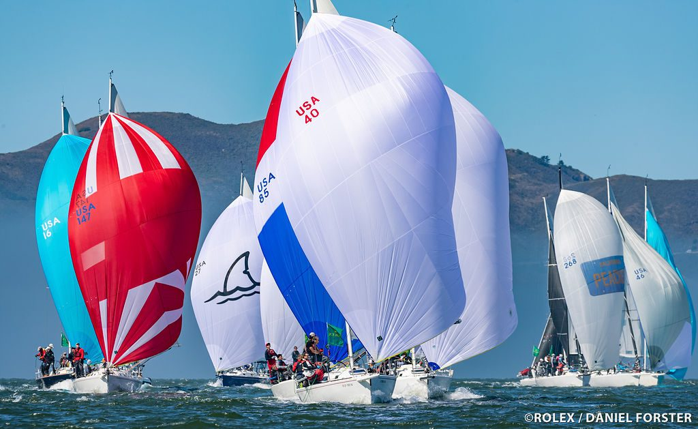
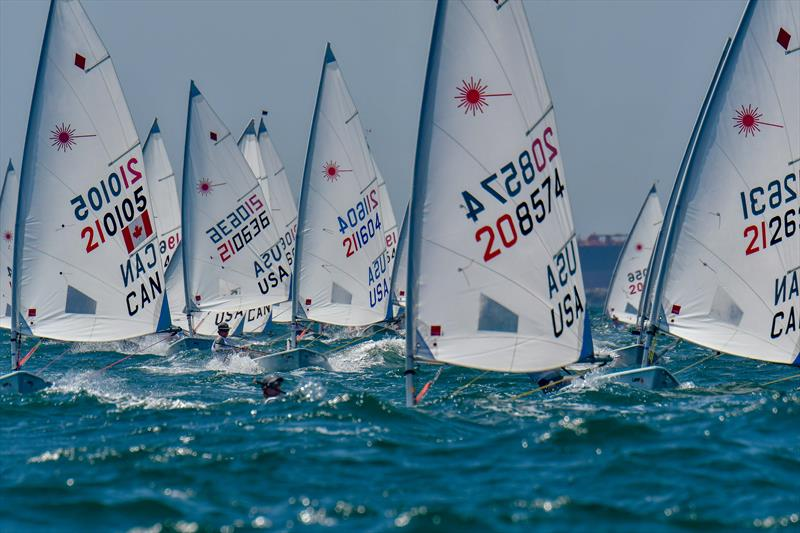
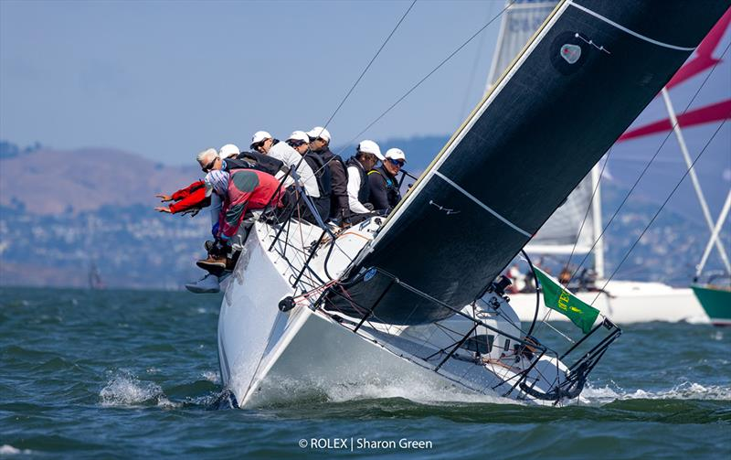
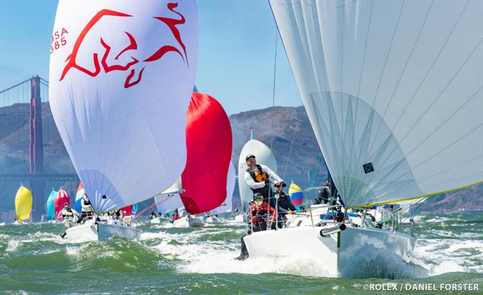
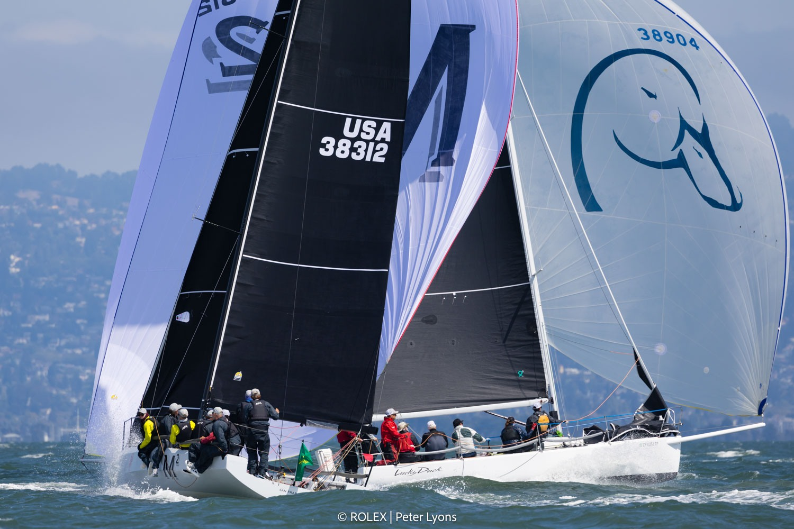

More ways
to get on the water.
Find people to sail with, coaching to learn from, and boats to get you on the water, all connected through one sailing profile.
- People
- Skills
- Boats
- A stronger sailing community
Sailing opportunities are fragmented.
Crew lists, yacht clubs and group chats help people connect, but access to sailing often depends on who you know and where you know to look.

Opportunities are scattered across multiple platforms.

It can be hard to find coaching, boat access or the right people.

New to a city? You often have to start from scratch.
One profile.
More ways to get on the water.
Build a verified sailing profile and unlock opportunities to crew, find coaching and access boats, all in one place.
People
Find crew, skippers and sailing opportunities
Skills
Find certified instructors and coaching
Boats
Find boat access and rentals
Find your
next sail.
People. Skills. Boats.
A trusted sailing profile.
Showcase your credentials, experience and sailing history, so others can get to know and sail with you.
- Identity verifiedVerified through a trusted third-party service
- CredentialsSailing certifications, boating card and more
- ExperienceBoats, positions and experience level
- Sailing historyConfirmed sails, references and reviews
Profile
Discover

A shareable sailing profile on the web.
Start with a web MVP where sailors can create and verify their profile, showcase their credentials and experience, and share it with the broader sailing community. Use it to respond to opportunities, connect with coaches, or introduce yourself in existing sailing networks.
More people.
Photos: © Rolex / Daniel Forster, © Rolex | Peter Lyons, and © Rolex | Sharon Green, as credited on the images.